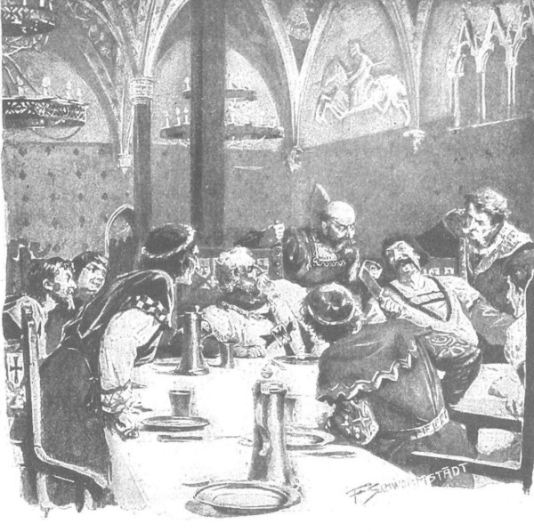

Ông Maćko và Zbyszko hẹn nhau sẽ rời Malborg ngay, nhưng họ không ra đi vào cái hôm mà tâm hồn họ được hiệp sĩ Zyndram xứ Maszkowice cổ vũ, vì hôm ấy các vị sứ giả và khách được mời dự bữa trưa ở Thượng Thành, rồi sau đó là tiệc tối. Zbyszko tham gia với tư cách hiệp sĩ hoàng gia, và do có quan hệ ruột thịt với chàng nên cả ông Maćko cũng được mời. Bữa trưa được tổ chức cho ít thực khách, trong một phòng tiệc rộng rất tráng lệ, với mười cửa sổ chiếu sáng, có vòm trần thon thả được đỡ chỉ bằng một cây cột, với thủ pháp nghệ thuật xây dựng tinh xảo hiếm thấy. Ngoài các hiệp sĩ hoàng gia, khách mời chỉ có một vị quý tộc Swabia [240] và một người xứ Burgundia, chắc là đại diện những nhà cầm quyền giàu có, thay mặt họ đến đây để vay tiền Giáo đoàn. Bên phía chủ, ngoài đại thống lĩnh còn có bốn vị chức sắc được gọi là trụ cột của Giáo đoàn, là tổng lãnh binh, chánh quản quân y, chánh quản quân nhu và chánh quản ngân khố. Trụ cột thứ năm, đại thống chế, vào thời điểm đó đang bận tham gia chinh phạt chống lại đại quận công Witold.
Giáo đoàn vẫn tự xưng là nghèo, vậy mà họ được dùng toàn chén vàng đĩa bạc, uống thứ vang ngọt Hy Lạp hảo hạng, vì đại thống lĩnh muốn làm lóa mắt các đặc sứ Ba Lan. Mặc dù la liệt đồ ăn thức uống, các vị thực khách vẫn cảm thấy bữa tiệc gò bó, vì khó trò chuyện và phải giữ sự nghiêm cẩn. Tuy nhiên, tiệc tối trong đại sảnh khánh tiết [241] rộng mênh mông thì vui hơn nhiều, bởi khi ấy tập trung cả Giáo đoàn và tất cả những hiệp khách mà đại thống chế chưa kịp kéo theo để đi đánh đại quận công Witold. Cuộc vui này không bị xáo trộn bởi bất kỳ tranh chấp hay tranh cãi nào cả.
Dẫu giới hiệp sĩ ngoại quốc vẫn nhìn các hiệp sĩ Ba Lan bằng con mắt e dè vì sợ rằng một ngày nào đó họ sẽ phải chạm trán nhau, nhưng Giáo đoàn Thánh chiến đã cảnh báo trước rằng họ phải giữ bình tĩnh và đòi hỏi họ phải làm thế, bởi động đến sứ giả là xúc phạm đến đức vua và cả vương quốc. Nhưng ngay cả trong trường hợp ấy, Giáo đoàn vẫn để lộ ác tâm khi cảnh báo thực khách về tính dễ nổi nóng của người Ba Lan: “Một khi rượu đã ngà ngà, chỉ cần một lời nói xóc là đủ cho anh bị vặt râu hoặc bị xỉa ngay một nhát dao.” Về sau các vị khách đã rất ngạc nhiên trước sự vui vẻ của cả hiệp sĩ Powała xứ Taczew lẫn hiệp sĩ Zyndram xứ Maszkowice, và những người nhanh trí hiểu ra rằng người Ba Lan không hề thô bạo như miệng lưỡi độc địa của quân Thánh chiến.
Một số người vốn quen với các trò vui tinh tế tại các triều đình hoa lệ phương Tây, không thích phong cách của các hiệp sĩ Thánh chiến, bởi nhạc trong bữa tiệc tối ồn quá mức, những bài hát của ca công quá thô lỗ, những lời đùa của lũ hề quá tục tĩu, cảnh nhảy nhót của lũ gấu và những ả gái chân trần quá náo loạn. Nếu sự hiện diện của đàn bà tại Thượng Thành có gây ngạc nhiên, thì nên biết rằng lệnh cấm dường như đã bị phá bỏ từ lâu, và từ thuở xưa, chính đại thống lĩnh Winrich von Kniprode vĩ đại đã từng khiêu vũ với nàng Maria von Alrieben xinh đẹp. Các đồng đạo giải thích rằng phụ nữ không chỉ được sống tại Thượng Thành, mà còn có thể đến dự tiệc chiêu đãi; năm ngoái, phu nhân Witoldowa [242] - người đang sống trong cung điện cổ kính Puszkarnia theo phong cách hoàng gia tại Tiền Thành, hằng ngày vẫn đến đây để chơi cờ đam bằng số vàng mà bà được tặng mỗi tối.
Đêm đó người ta không chỉ chơi cờ đam và cờ vua, mà còn chơi trò gieo xúc xắc, những trò vui thậm chí còn nhiều hơn cả lời trò chuyện thường bị chìm đi trong tiếng hát ca và tiếng nhạc quá ầm ĩ. Tuy nhiên, cũng có những khoảng lặng giữa bầu không khí ồn ào, và tranh thủ một khoảnh khắc như vậy, hiệp sĩ Zyndram xứ Maszkowice làm ra vẻ không biết gì, hỏi đại thống lĩnh là có phải chư hầu mọi miền đất đều yêu mến Giáo đoàn hay chăng.
Konrad von Jungingen trả lời:
- Ai yêu thánh giá, hẳn là phải yêu Giáo đoàn.
Câu trả lời làm hài lòng cả Giáo đoàn lẫn khách khứa, vì vậy họ lên tiếng ca tụng ông, thêm phấn khích ông bèn nói tiếp:
- Ai là bạn với chúng tôi thì chúng tôi đối tốt, còn ai là thù, chúng tôi có hai cách đối xử.
- Cách gì thế? - Vị hiệp sĩ Ba Lan hỏi.
- Có thể ngài không biết rằng tôi từ phòng riêng đi xuống đại sảnh này bằng những bậc thang nhỏ trong tường thành, bên cạnh cầu thang đó có một căn phòng hình mái vòm, tôi sẽ đưa ngài đến thăm, ngài sẽ biết ngay.
- Xin đi ngay ạ! - Bọn đồng đạo kêu lên.
Hiệp sĩ xứ Maszkowice đoán ngay là đại thống lĩnh định nói đến “tòa bảo tháp đầy vàng” mà Giáo đoàn Hiệp sĩ Thánh chiến tự hào, vì vậy ông ngẫm nghĩ một chút rồi nói:
- Hồi xa xưa, cách đây đã lâu lắm rồi, có một hoàng dế người Đức đã chỉ cho vị sứ giả của chúng tôi, tên là Skarbek [243] , một căn phòng như vậy và bảo: “Ta có cái để đánh bại chủ của ngươi!” Cụ Skarbek liền ném thêm vào đó một chiếc nhẫn quý của mình và bảo: “Vàng hãy đi với vàng, dân Ba Lan chúng tôi yêu chuông thép hơn…” Người Đức các ngài có biết tiếp sau đó là gì không? Sau đó là Hundsfeld [244] …
- Hundsfeld là gì? - Cả tá hiệp sĩ cùng hỏi dồn.
- Đó là một cánh đồng, - hiệp sĩ Zyndram thản nhiên trả lời, - nơi người Đức chết không kịp chôn, cuối cùng chỉ có lũ chó chôn cất họ.
Nghe câu ấy, các hiệp sĩ và đồng đạo của Giáo đoàn mất hẳn tự tin, không biết phải nói gì, còn hiệp sĩ Zyndram xứ Maszkowice thì nói như để kết luận:
- Vàng không thể chống nổi sắt thép.
- Hà! - Đại thống lĩnh kêu lên. - Nhưng chúng ta còn cách thứ hai nữa - sắt. Ngài cũng đã thấy cánh thợ rèn giáp sắt thiện nghệ ở Tiền Thành rồi chứ. Họ nện búa ngày đêm, làm ra những áo giáp và loại gươm kiếm không thể tìm thấy ở đâu khác trên đời.
Đáp lại, hiệp sĩ Powała xứ Taczew vươn tay về phía giữa bàn, nắm lấy con dao chặt thịt dài khoảng một cẳng tay, rộng hơn nửa gang tay, nhẹ nhàng cuộn tròn nó lại thành một cái ống, như thể nó làm bằng giấy da cừu, và giơ cao lên để mọi người cùng thấy, rồi đưa nó cho đại thống lĩnh.
- Nếu thứ sắt này mà dùng làm kiếm, - ông nói, - thì các ngài cũng chẳng chứng tỏ được gì đâu.

Hiệp sỹ Powała xứ Taczew nhẹ nhàng cuộn tròn con dao chặt thịt lại thành một cái ống
Rồi ông mỉm cười hài lòng, còn đám giáo sĩ và giáo dân nhổm hết cả lên, chạy vội sang chỗ đại thống lĩnh, chuyền tay nhau con dao đã bị cuộn tròn lại, tất thảy đều im lặng, thảng thốt đứng tim trước sức mạnh kinh hoàng.
- Thề có Thánh Liboriusz! - Mãi lúc sau đại thống lĩnh mới thốt lên. - Ngài quả có cánh tay sắt, thưa ngài.
Còn vị quý tộc Burgundia nói thêm:
- Còn cứng hơn cả sắt. Ông ấy uốn con dao dễ như nó làm bằng sáp vậy.
- Thậm chí ông ấy không đỏ mặt, bắp tay không nổi cuộn! - Một đồng đạo thốt lên.
- Bởi lẽ, - hiệp sĩ Powała nói, - vương quốc chúng tôi vốn quen sống giản dị, mộc mạc, không có những tiện nghi sang trọng như tôi thấy ở đây, nhưng chúng tôi khỏe mạnh hơn.
Lúc này, đám hiệp sĩ Ý và Pháp đến gần, nói với ông bằng các thứ ngôn ngữ ríu ra ríu rít, mà ông Maćko bảo là giống như tiếng mấy cái bát bằng thiếc cọ vào nhau. Họ ca ngợi sức mạnh của ông, còn ông chạm cốc với họ và nói:
- Chúng tôi thường làm những chuyện như thế này trong các bữa tiệc, ngay cả các cô gái cũng làm được với những con dao nhỏ hơn.
Nhưng đám người Đức, vốn thích khoe khoang với người lạ về tầm vóc và sức mạnh của họ, thì xấu hổ và tức giận, vì vậy, lão hiệp sĩ già Helfenstein đã hét to cho cả bàn nghe:
- Thật xấu hổ cho bọn ta! Arnold von Baden, hãy chứng tỏ là xương cốt chúng ta không phải làm bằng nến nhà thờ! Đưa cho anh ta con dao!
Người hầu liền mang ngay dao vào đặt trước mặt Arnold, nhưng chắc lúng túng vì có mặt quá đông nhân chứng, hoặc sức cũng không mạnh như ông Powała, nên y chỉ bẻ cong con dao, chứ không thể cuộn nó thành vòng tròn.
Vì thế, nhiều khách ngoại quốc, những người trước đó được các hiệp sĩ Thánh chiến thì thào báo trước rằng mùa đông này sẽ mở cuộc chiến với vua Jagiełło, lúc này chợt suy nghĩ lại, họ nhớ ra rằng mùa đông ở đất nước này rất khắc nghiệt, tốt nhất là quay về lâu đài quê hương khi trời còn dễ chịu.
Cũng lạ là những suy nghĩ ấy nảy sinh trong đầu họ vào tháng bảy, là thời điểm thời tiết tuyệt đẹp và nóng nực.